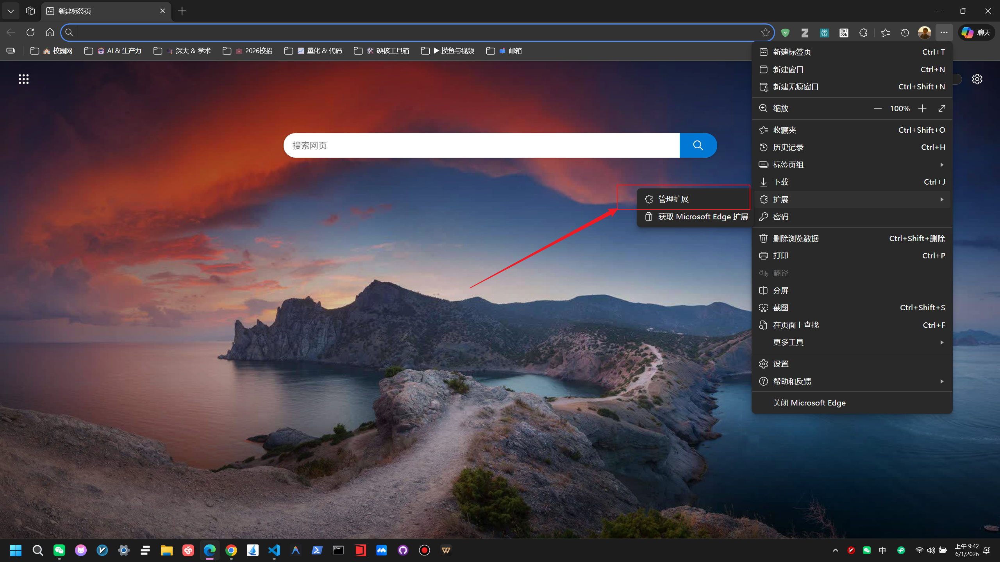
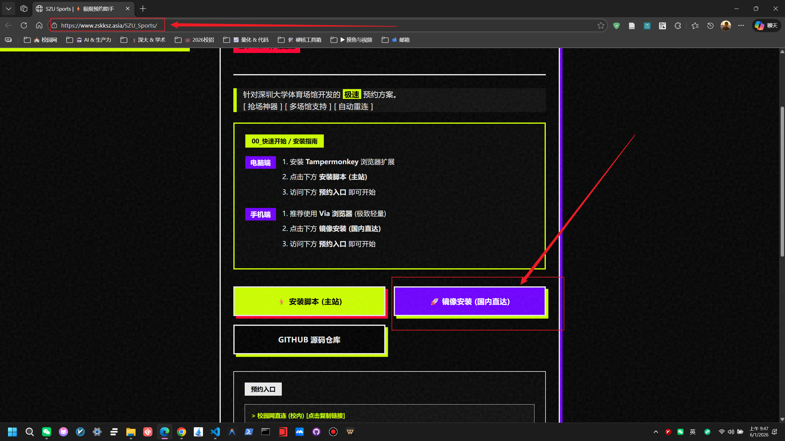
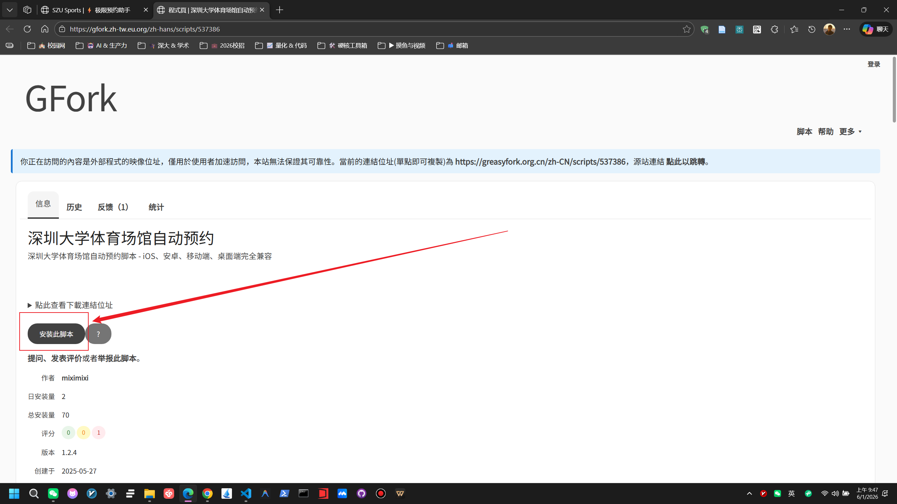
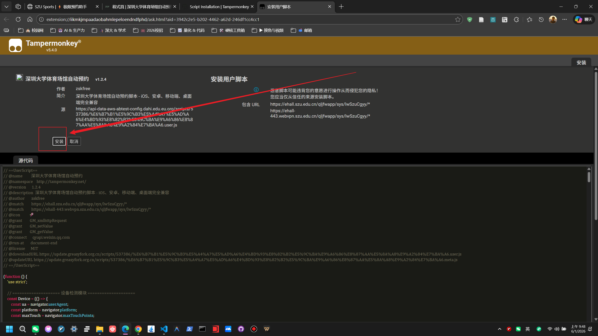
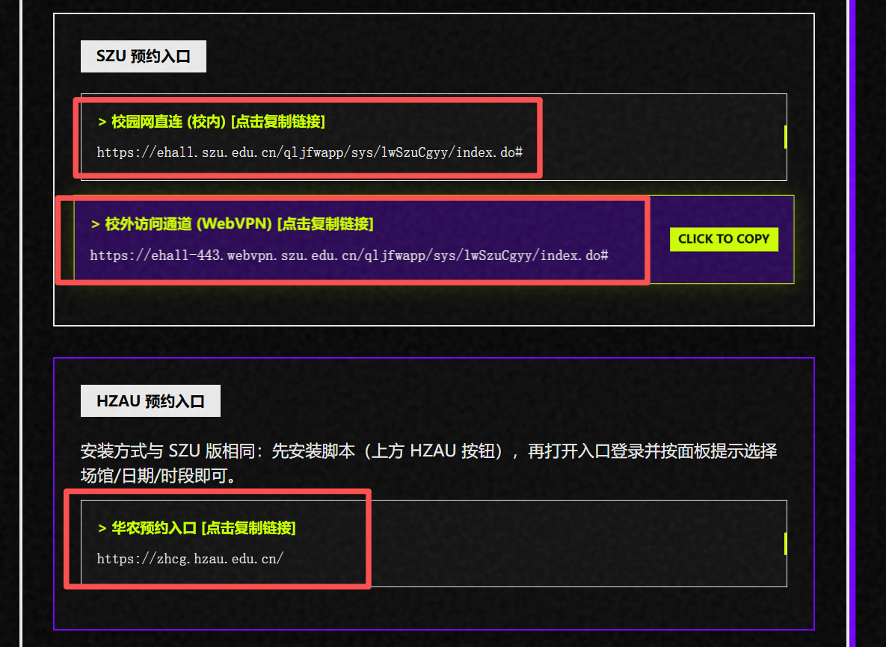

电脑端安装脚本教程
本指南将详细介绍如何在 PC 浏览器上配置 Tampermonkey 并安装 SZU Sports 脚本。
01. 安装 Tampermonkey 扩展
提示： 以下以 Microsoft Edge 为例，Chrome / Firefox 等浏览器操作流程基本一致。
1. 打开扩展管理页面：在浏览器地址栏输入 edge://extensions/ 或通过菜单进入。
2. 启用开发者模式：确保右上角的“开发人员模式”开关已开启。

3. 进入扩展商店：点击“获取 Microsoft Edge 扩展”。

4. 搜索并安装：搜索 Tampermonkey，点击“获取”并确认添加。


02. 安装 SZU Sports 脚本
1. 访问安装页面：打开 https://www.zskksz.asia/SZU_Sports/。
2. 开始安装：点击“镜像安装（国内直达）”，随后在跳转的页面点击“安装此脚本”。
 3. 最终确认：在弹出的安装确认页面点击“安装”按钮。
03. 使用与验证
1. 复制连接：回到脚本主页，点击“预约入口”中的链接，地址将自动复制。
2. 打开页面：在新标签页粘贴并访问。如果看到如下界面，说明脚本已成功运行！

常见问题 FAQ
Q: 其他浏览器如何安装？
A: Chrome、Firefox 等浏览器均支持 Tampermonkey，请前往各自对应的应用商店搜索安装即可。
Q: 脚本没有加载出来？
A: 请检查是否开启了“开发者模式”，并确保 Tampermonkey 扩展处于启用状态。